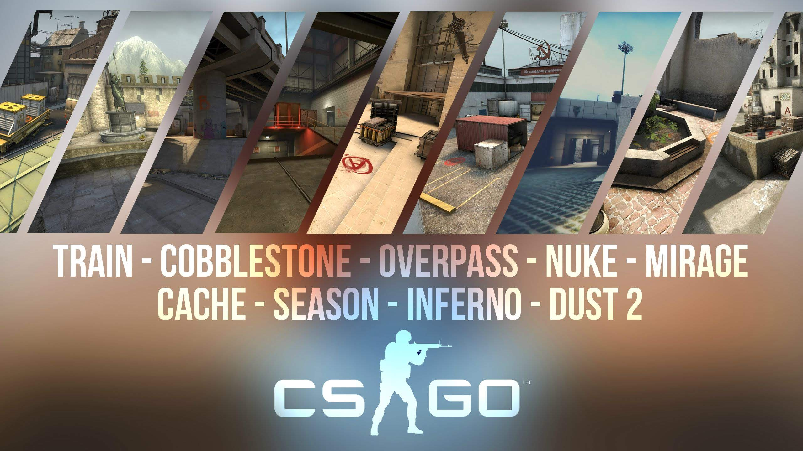
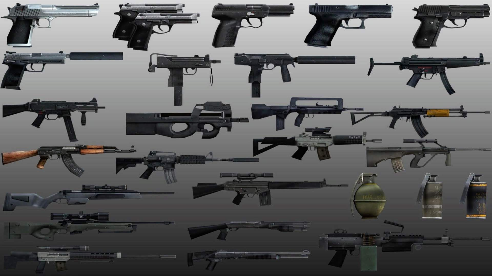
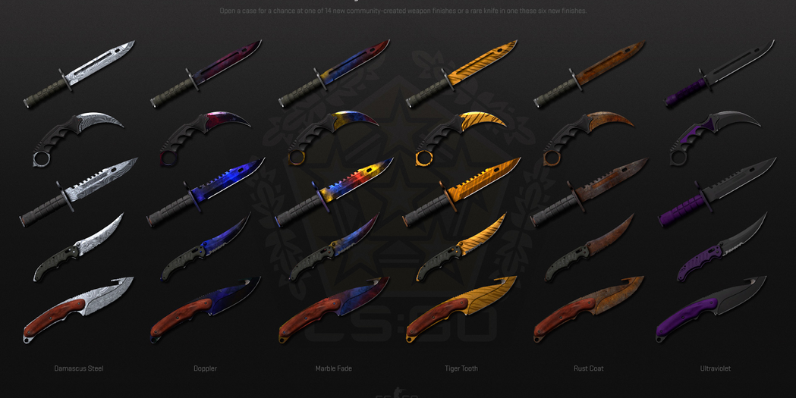
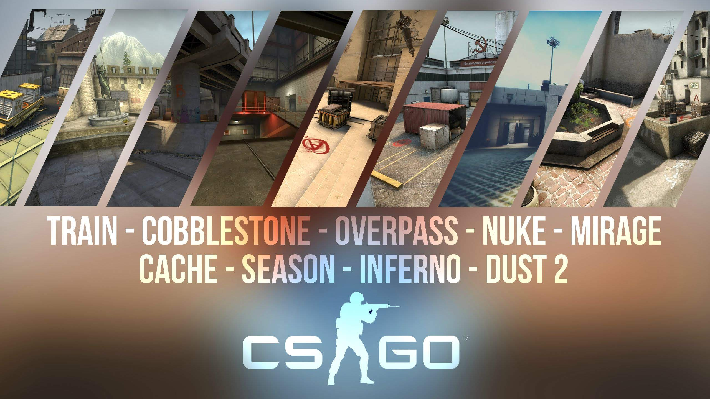
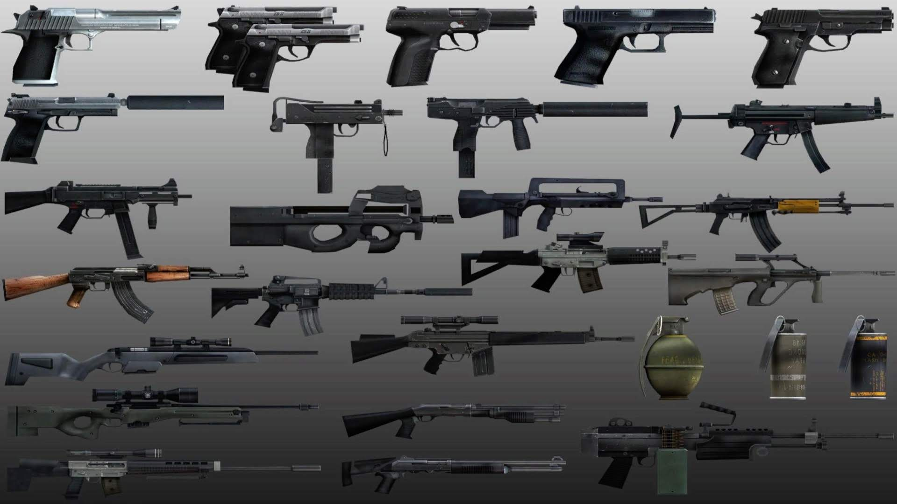
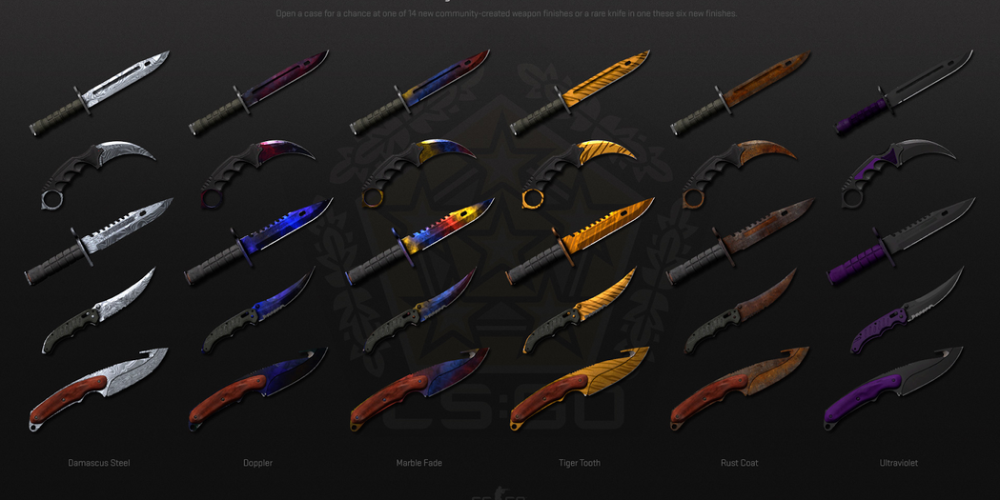
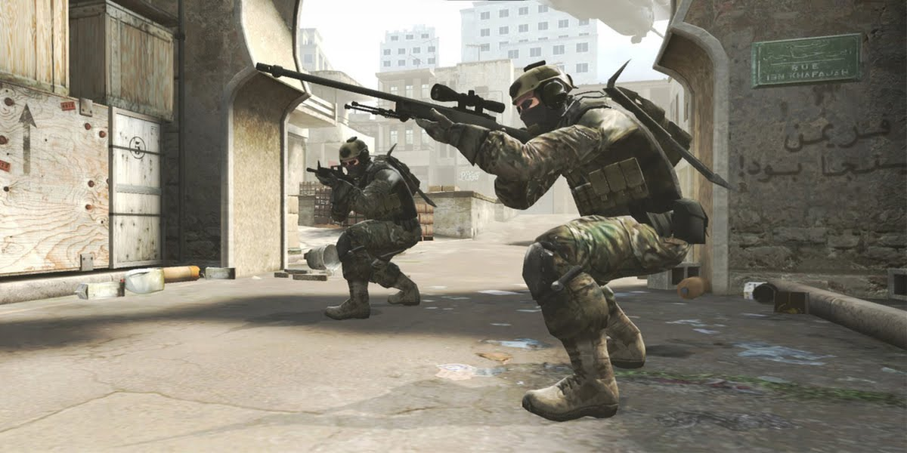
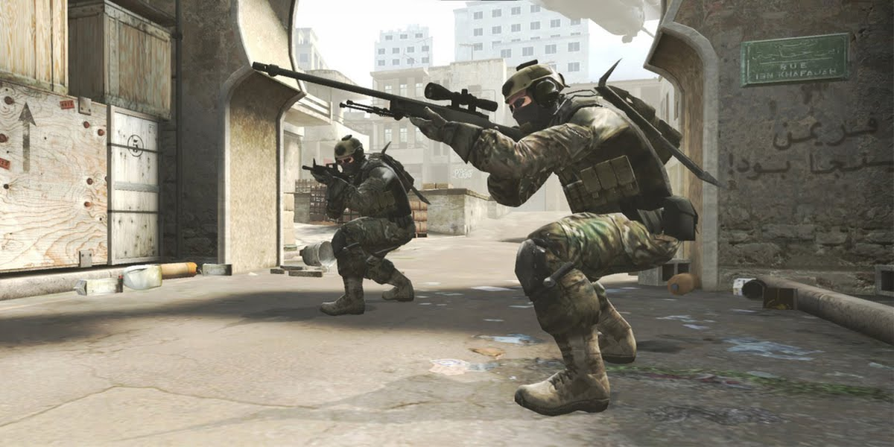

 



Counter-Strike: Global Offensive (CS:GO) is a multiplayer first-person shooter video game developed by Hidden Path Entertainment and Valve Corporation. It is the fourth game in the Counter-Strike series and was released for Microsoft Windows, OS X, Xbox 360, and PlayStation 3 in August 2012, with the Linux version released in September 2014. The game pits two teams against each other: the Terrorists and the Counter-Terrorists. Both sides are tasked with eliminating the other while also completing separate objectives, the Terrorists, depending on the game mode, must either plant the bomb or defend the hostages, while the Counter-Terrorists must either prevent the bomb from being planted, defuse the bomb, or rescue the hostages. There are eight game modes, all of which have distinct characteristics specific to that mode. Global Offensive has matchmaking support that allows players to play on dedicated Valve servers, as well as allowing members of the community to host their own servers with custom maps and game modes. Global Offensive has a competitive scene, with Valve-sponsored tournaments being the premier competitive events for the game. Global Offensive received positive reviews from critics. The game was praised for its overall gameplay and faithfulness to the previous iterations in the series. Some of the early features were criticized, and while the console versions received positive reviews, reviewers believed there were obvious differences between the console and PC versions of the game.